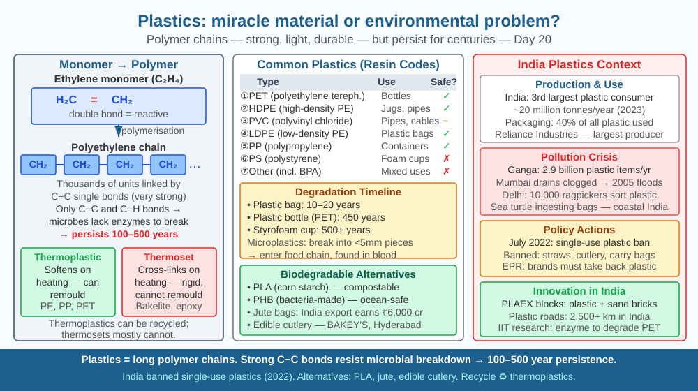

Understand the chemistry of polymers that makes plastics so useful — and the same chemistry that makes them an environmental crisis — so you can evaluate solutions scientifically rather than emotionally.
India generates 3.4 million tonnes of plastic waste per year. Plastic bags have been found at the bottom of the Mariana Trench (11,000 m depth). Microplastics have been detected in human blood, lungs, and breast milk. Yet hospitals cannot function without sterile single-use plastic syringes. Food lasts weeks longer in plastic packaging. Water pipes across India's villages are made of PVC. The same material that saves lives is poisoning ecosystems. How can one type of material be both miracle and catastrophe — and what does the chemistry tell us about real solutions?
What polymers are:
A polymer is a very long molecule made by joining thousands of smaller units (monomers) end-to-end. The word comes from Greek: poly = many, meros = parts.
Polyethylene (the most common plastic): monomer = ethylene (CH₂=CH₂) → polymer = …-CH₂-CH₂-CH₂-CH₂-… (repeating chain of 10,000–100,000 units)
Why plastics are so useful:
Why plastics persist in the environment:
Microbes (bacteria, fungi) decompose organic matter by breaking its chemical bonds using enzymes. But enzymes are highly specific — evolved to break bonds found in natural materials (cellulose, proteins, fats). Synthetic plastic chains: - Have no natural equivalent - Have carbon-carbon backbone bonds that most enzymes cannot break - May persist for 200–500+ years in nature
Most plastics are non-biodegradable polymers that microbes cannot break down — this is the direct answer to why plastic persists.
Degradation modes:
Biodegradable alternatives:
Polymers made from natural monomers that microbes recognise: - PLA (polylactic acid): made from corn starch, breaks down in industrial composting conditions (~60°C) - PHB (polyhydroxybutyrate): made by bacteria, fully biodegradable - Starch blends: mixed with starch, microbes eat the starch and the plastic disintegrates - Cellulose-based films: used in packaging
Recycling limitations:
Most plastic recycling is downcycling — PET water bottles → polyester fibre (carpet, clothing) → landfill. True closed-loop recycling (bottle → bottle) is possible but requires sorted, clean waste — India's informal waste-picker network (Kabadiwalas) recovers ~30% of recyclable plastics.
Think of natural polymers (cellulose, starch, protein) as words spelled with letters bacteria can read — they have the right enzymes (dictionaries) to decode and disassemble them. Synthetic plastic polymers are like words written in an alien alphabet — no existing enzyme-dictionary can decode them. A biodegradable plastic is designed using letters (monomers) that bacteria's enzymes can recognise — so even though the word is long, bacteria can slowly disassemble it letter by letter. The challenge is making these words (biopolymers) as cheap and strong as the alien-alphabet ones (conventional plastics).

The diagram has three panels: Left — polymer chain of polyethylene (zigzag carbon backbone, grey) vs a starch chain (labelled with -OH groups, brown) — starch has reactive groups, PE does not. Centre — degradation pathways: (1) photodegradation → microplastics → stays in environment; (2) biodegradation (arrow down to CO₂ + H₂O + biomass — labelled "true solution"). Right — a bar chart: time to degrade: PET bottle 450 years, PVC pipe 500+ years, PLA (industrial composting) 3–6 months, cellulose film 1–2 months. A sidebar: India's plastic waste statistics — 3.4 Mt/year generated, 60% collected, 30% recycled by kabadiwalas.
Compare three materials: a plastic bag, a paper bag, and a banana leaf (or fresh leaf). Cut small pieces of each and bury them in a pot of soil for 4 weeks (or observe at weekly intervals in a sunny window). Record: smell changes, discolouration, physical breakdown. At 4 weeks, the leaf is significantly decomposed, the paper partially, the plastic unchanged. You are directly observing biodegradation — microbes decomposing materials they can chemically "read." The plastic is chemically invisible to soil microbes.
Scientists at the Université de Toulouse discovered a bacterium, Ideonella sakaiensis, in 2016 that can break down PET plastic (water bottles) — it evolved an enzyme called PETase in a Japanese recycling facility. In 2020, British and US researchers engineered a mutant PETase 20% faster than natural, and a fusion enzyme (FAST-PETase) that can degrade PET in hours rather than months. If scaled up, this could be a true biodegradation solution for PET — the world's most common plastic. India's biotech companies (like Biocon) have the expertise to develop industrial enzyme production. Does enzymatic plastic degradation count as biodegradation or as industrial chemical processing? Why does the distinction matter for environmental regulation?
What is the main reason plastics persist so long in the environment?
Why is understanding the chemistry of plastic degradation important?
If a biodegradable plastic were designed using natural polymers, what would you predict?
India generates 3.4 million tonnes of plastic waste annually. (a) If 60% is collected and 30% of the collected amount is recycled, how many tonnes are actually recycled per year? (b) The remaining collected waste and all uncollected waste eventually reaches the environment. How many tonnes per year enter the environment? (c) If a PET bottle takes 450 years to fully degrade, and India has been generating plastic waste at this rate since 2000 (25 years), approximately how much total plastic (in Mt) has accumulated in India's environment so far (assuming zero degradation)? (d) If a biodegradable PLA alternative degraded in 1 year, by how much would the accumulated environmental plastic reduce after 50 years of complete replacement?
Bakelite — the world's first fully synthetic plastic — was invented in 1907 by Leo Baekeland and became the material of the 20th century: telephones, radios, electrical fittings, jewellery. Old All India Radio (AIR) equipment used Bakelite casings. Unlike most modern plastics, Bakelite is a thermoset — once formed, it cannot be remelted or recycled. It is also unusually durable: 100-year-old Bakelite objects are still solid today. This makes Bakelite simultaneously one of the first plastics (miracle) and one of the most persistent in the environment (problem). The same chemical property — extreme durability — defines both its utility and its environmental legacy.
Plastics are long polymer chains (non-biodegradable) that microbes cannot break down — they persist 200–500+ years. Photodegradation creates microplastics, not solutions. Biodegradable plastics use natural monomers that enzymes can recognise. Recycling mostly downcycles.